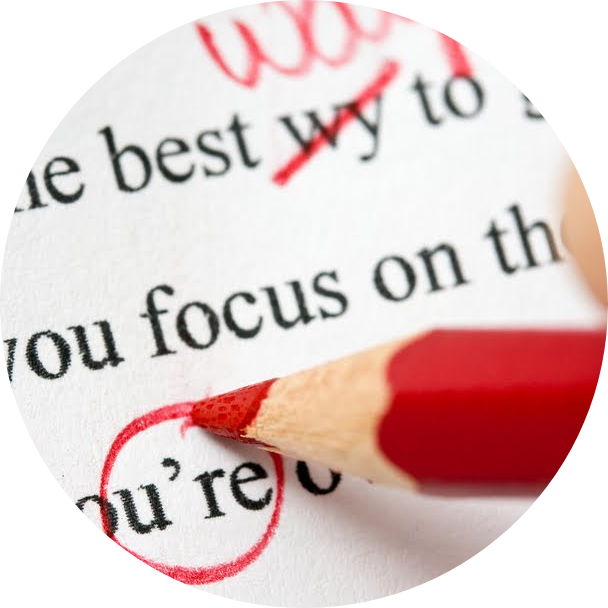
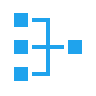
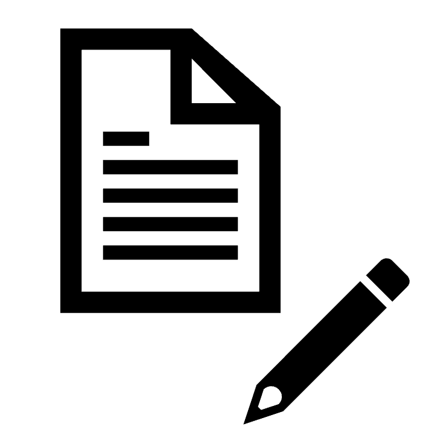

Références inexactes
Certaines références peuvent ne pas mener exactement à l’information affirmée dans le texte. Dans ce cas, une correction pourrait signaler l’écart entre la source citée et l’interprétation proposée par l’auteur.

Le premier axe du projet vise à transformer l’article scientifique en un objet vivant, révisable et perfectible. Plutôt que de considérer un article comme un texte figé une fois publié, la plateforme permettrait aux utilisateurs de proposer des corrections, des précisions et des mises à jour directement liées au contenu de l’article.

Une partie importante du travail scientifique repose sur les références utilisées. Pourtant, certaines citations peuvent être inexactes, trop générales ou simplement reprises d’un autre article sans vérification directe. La plateforme permettrait donc d’identifier ces problèmes et de proposer des corrections.
Certaines références peuvent ne pas mener exactement à l’information affirmée dans le texte. Dans ce cas, une correction pourrait signaler l’écart entre la source citée et l’interprétation proposée par l’auteur.
Une citation peut parfois renvoyer à un article qui ne fait que reprendre une information déjà présente ailleurs. La plateforme pourrait alors aider à retrouver la source originale.
Lorsqu’un livre ou un article complet est cité sans indication précise, il peut devenir difficile de vérifier l’information. Des pages, passages ou sections plus précises pourraient être ajoutés.
L’intelligence artificielle pourrait comparer automatiquement une citation avec la source à laquelle elle renvoie, afin de détecter les déformations, les exagérations ou les références mal utilisées.
Les corrections ne concerneraient pas seulement les références, mais aussi les informations contenues dans les articles. Une affirmation pourrait être nuancée, contestée ou corrigée lorsqu’elle repose sur une source dépassée, une interprétation fragile ou un raisonnement problématique.
Une information valide au moment de la publication peut devenir partielle ou insuffisante si de nouvelles recherches viennent la nuancer ou la contredire.
Certaines affirmations peuvent relever davantage de l’opinion ou de l’interprétation que d’un résultat démontré. La plateforme permettrait de rendre cette distinction plus visible.
Des contradictions internes, des raisonnements circulaires ou des affirmations difficilement réfutables pourraient être signalés afin d’améliorer la rigueur du texte.
L’un des avantages de cette approche est qu’elle permettrait de critiquer une partie précise d’un article sans rejeter l’ensemble du texte ni discréditer entièrement son auteur. En sciences humaines, les débats entre écoles de pensée peuvent parfois mener à des caricatures ou à des critiques trop générales.
La plateforme favoriserait plutôt une critique localisée, argumentée et vérifiable. Une erreur, une faiblesse ou une référence problématique pourrait être corrigée sans que l’article entier soit nécessairement considéré comme invalide.
Les corrections proposées par les utilisateurs pourraient contribuer à l’attribution d’une cote de qualité aux articles. Cette cote ne serait pas seulement une note générale, mais un indicateur permettant de mieux comprendre le statut scientifique du texte.
Un article pourrait être identifié comme daté lorsque ses références sont anciennes ou lorsque certaines de ses informations nécessitent une réévaluation.
Un article pourrait être considéré comme contesté lorsque ses références, ses conclusions ou ses interprétations font l’objet de désaccords importants.
Un article ancien, fréquemment cité et jamais sérieusement invalidé pourrait recevoir une cote élevée, puisqu’il occuperait une place importante dans le réseau du savoir.

Lorsqu’un article reçoit plusieurs corrections pertinentes, son auteur pourrait publier une nouvelle version du texte. Chaque mise à jour serait conservée dans l’historique de l’article, afin que les utilisateurs puissent voir ce qui a été modifié et pourquoi.
Cette logique donnerait une dimension évolutive à la publication scientifique. Un article ne serait plus simplement publié une fois pour toutes : il pourrait être amélioré, précisé et enrichi à partir des critiques reçues.